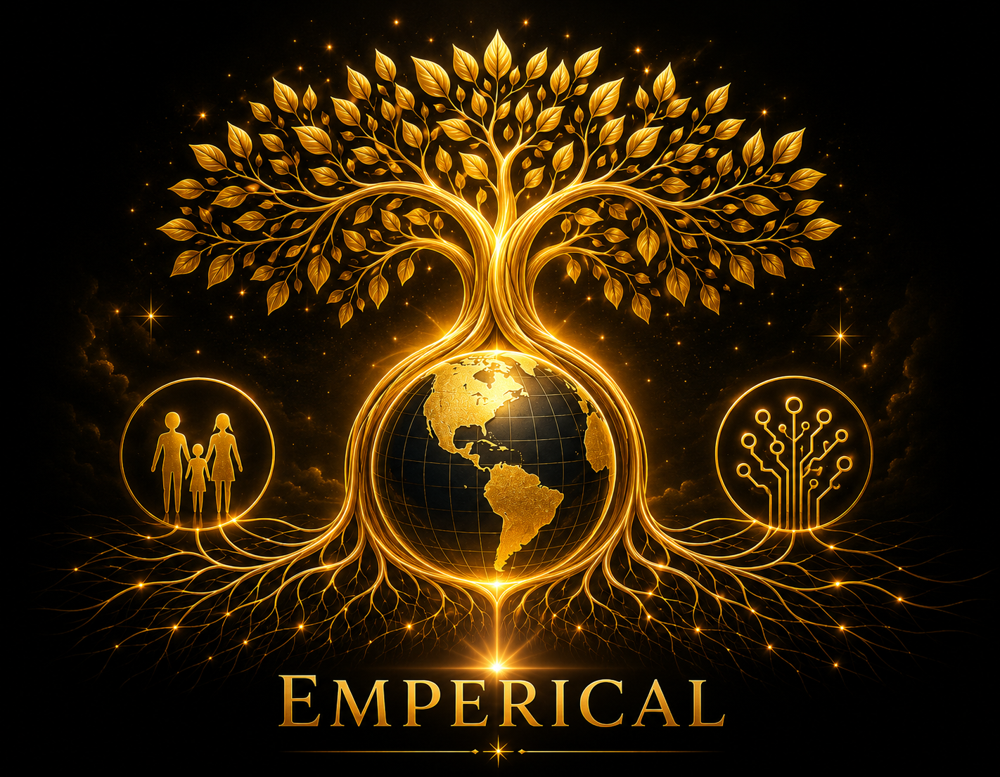

Choose a location, then select a story.


✦ Climate & Energy: Britain Opens Grid Door for Hundreds of Energy Projects✦ Climate & Energy: Offshore Wind Forecast Points to a Much Larger Global Buildout✦ Climate & Energy: Europe’s Renewable Power Growth Offers Industry a New Opening✦ Health & Medicine: Pancreatic Cancer Pill Sets a New Survival Benchmark✦ Health & Medicine: Targeted Cancer Drugs Help More Patients Live Longer✦ Health & Medicine: GLP-1 Research Points to Possible Cancer Benefits✦ Science & Discovery: Africa Expedition Reveals New Species in a Biodiversity Hotspot✦ Nature & Wildlife: Mangrove Loss Shows Signs of Reversal Worldwide✦ Education & Youth: Dutch Children Again Rank Among the World’s Happiest✦ Education & Youth: Schools Give Pupils a Stronger Voice in How They Are Run✦ Climate & Energy: Britain Opens Grid Door for Hundreds of Energy Projects✦ Climate & Energy: Offshore Wind Forecast Points to a Much Larger Global Buildout✦ Climate & Energy: Europe’s Renewable Power Growth Offers Industry a New Opening✦ Health & Medicine: Pancreatic Cancer Pill Sets a New Survival Benchmark✦ Health & Medicine: Targeted Cancer Drugs Help More Patients Live Longer✦ Health & Medicine: GLP-1 Research Points to Possible Cancer Benefits✦ Science & Discovery: Africa Expedition Reveals New Species in a Biodiversity Hotspot✦ Nature & Wildlife: Mangrove Loss Shows Signs of Reversal Worldwide✦ Education & Youth: Dutch Children Again Rank Among the World’s Happiest✦ Education & Youth: Schools Give Pupils a Stronger Voice in How They Are Run